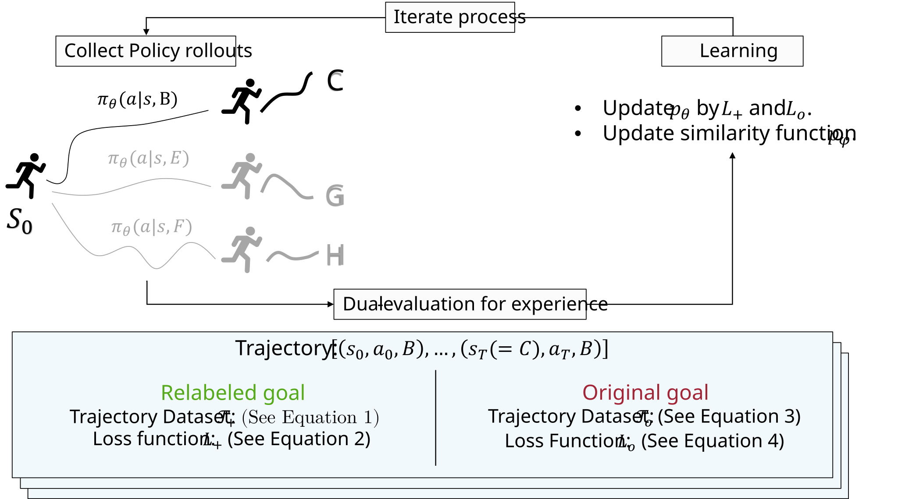
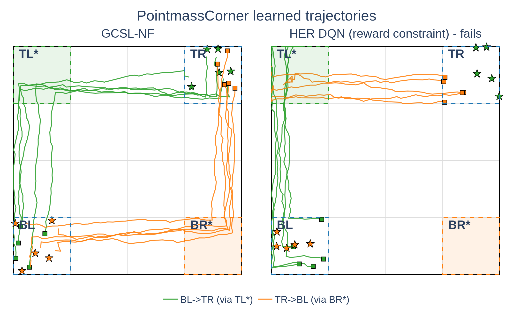

arXiv:2509.03206
Autonomous Learning From Success and Failure
Goal-Conditioned Supervised Learning with Negative Feedback
Learning from human-engineered reward functions and imitation learning of human-generated demonstrations are the two principal approaches for training autonomous systems. Both require human specification for each behaviour to be acquired — a problem for long-lived self-adaptive systems whose goals and operating conditions cannot be fully anticipated at design time. Goal-Conditioned Supervised Learning (GCSL) offers a self-supervised alternative through self-imitation, but has two limitations: learning only from self-generated experience can exacerbate the agent's own biases, and relabelling lets the agent attend only to successful outcomes, precluding it from learning from its mistakes.
We propose Goal-Conditioned Supervised Learning with Negative Feedback (GCSL-NF), which evaluates each trajectory twice: positively with respect to relabelled goals, and correctively with respect to the goal originally intended. The corrective target comes from a similarity function learned contrastively from trajectory-induced neighbourhood relations, so that neither a reward function nor a geometric distance needs to be specified. GCSL-NF overcomes limitations imposed by initial biases, increasingly benefits from negative feedback as learning progresses, and matches or surpasses leading GCSL- and HER-based methods across discrete and continuous goal-reaching tasks. Its learning signal remains informative under corrupted priors, runtime goal shift, sensor and actuation noise, and constraints enforced only during training.
A failed trajectory is relabelled into a success — and the failure is thrown away
Hindsight relabelling rescues data by reinterpreting what an agent did achieve as what it meant to achieve. That is a real gain, and it is also the whole problem: after relabelling, nothing in the training signal records that the trajectory was wrong for the goal actually requested.
What the objective does
GCSL maximises one likelihood
The training set is D = {(st, at, g′)} with g′ a future state of the same trajectory, and the policy maximises log π(at | st, g′). The mismatch between the achieved outcome and the original g never enters the loss.
So a trajectory that wandered is certified as expert behaviour for wherever it wandered to. With a biased initial policy, or after the goal distribution changes, the agent keeps certifying its own habit.
Every trajectory is read twice
One learned object, pθ(succ(g) = 1 | st, at), is the probability that acting with at at st ends near g. Two losses pull on it: the relabelled reading pulls its target to 1, the original-goal reading pulls it to whatever the learned similarity says the trajectory actually achieved.

The relabelled reading
Every state reachable later in the same trajectory is a goal that trajectory did reach, so the recorded action is treated as expert. A regularisation term pushes every other action down, which is what makes pθ a calibrated classifier rather than an unnormalised score.
The first term is imitation, the second is regularisation. H(x, y) = −y log x − (1−y) log(1−x) is the binary cross entropy; α = 0.2 throughout the experiments.
The original-goal reading
The same tuples are re-scored against the goal the agent was actually given. The target is not 0 and not 1 — it is pφ(sT, g), the learned estimate of how close the trajectory's endpoint came. Steps further from the end are discounted, because they are less responsible for where it ended up.
This is not a reward penalty. It is the supervised target obtained by evaluating the same experience against a different goal — which is why the method stays entirely inside supervised learning.
- Sample a goal g ∼ p(𝒢)
- Roll out greedily, at = argmaxa pθ(succ(g)=1 | st, a), for T steps; add τg to the buffer ℛ
- positive — relabel to 𝒯₊ = {(st, at, g′ = st+i)} and take one step on L₊
- corrective — build 𝒯o = {(st, at, sT, g)}, score it with pφ(sT, g), take one step on Lo
- Update the policy on the combined loss θnew ← argminθ ( β₁ L₊(θ) + β₂ Lo(θ) ), β₁ = β₂ = 1
- Update φ on the contrastive loss of Eq. (11)
There is no ε-greedy schedule and no action noise: the policy is greedy from the first episode, and exploration is driven by the corrective term pushing the agent off actions that keep missing.
Continuous action spaces · §3.3
The same two readings, one actor added
The regularisation term of L₊ sums over all actions, which only makes sense when they are enumerable. In the continuous case it is evaluated at the single action the actor proposes, following the deterministic policy gradient:
Lo is unchanged, and pφ is trained exactly as before. Both networks are [400, 300] fully connected with SiLU activations and a logistic output; Adam at 10−3.
What counts as close is read off the agent's own trajectories
Ideally two states are close when the agent can get from one to the other in a few steps. That policy-induced distance is not available in advance, so GCSL-NF approximates it: states that occur near each other in time within one trajectory are positives; states far apart in time, or drawn from different trajectories, are negatives.
How a training pair is drawn
Each row is one trajectory in the buffer; each dot is one time step. Fix a reference state (the black dot). Positives come from the same trajectory, drawn from a symmetric triangular distribution Δ(i, n) centred on it — chosen because it has a hard boundary at n. Everything past that boundary in the same trajectory is a negative, and so is every state of every other trajectory.
The paper uses n = 5 throughout, and shows in Figure 9 that n = 25 performs the same.
An illustration of the definitions above, generated in the browser rather than measured; the paper's own Figure 3 shows the same construction.
Experiments results
Every curve below is redrawn from the authors' own per-seed logs, using each plotting script's own binning and smoothing. Shaded bands are ±1 standard deviation across seeds; hover any panel for the values of all methods at that point.
.jpg)
| Environment | Obs. dim | Action set | Horizon | Notes |
|---|---|---|---|---|
| Point Mass Navigation | 2 | move | 50 | Obs. range [−1, 1]; step 0.05 with 𝒩(0, 0.01) noise. |
| + Obstacles | 2 | move | 70 | Adds a central circular obstacle, radius 0.4 at the origin. |
| 2D 4-room Navigation | 2 | move | 70 | Obs. range [−1.2, 1.2]; passageways of width 0.4. |
| 2D LiDAR Navigation | 64 | move/turn | 50 | Map 200 × 200; 360° scan; step 10 (move), π/2 (turn); goals are LiDAR readings at poses (x, y, θ). |
| Object Pushing | 4 | move | 50 | Obs. range [−0.5, 0.5]; puck side 0.2; obs. and goal cover end-effector and puck. |
| Environment | GCSL-NF | GCSL | HER DQN | HER A2C | W-GCSL | Contrastive GCRL |
|---|---|---|---|---|---|---|
| Point Mass Navigation | 0.085 ± .037 | 0.187 ± .080 | 0.066 ± .019 | 0.158 ± .029 | 0.127 ± .084 | 0.065 ± .014 |
| + Obstacles | 0.152 ± .015 | 0.341 ± .050 | 0.299 ± .031 | 0.481 ± .105 | 0.364 ± .034 | 0.213 ± .038 |
| 2D 4-Room Navigation | 0.495 ± .089 | 0.781 ± .066 | 0.658 ± .075 | 1.153 ± .312 | 0.775 ± .052 | 0.668 ± .070 |
| 2D LiDAR — orientation | 0.555 ± .070 | 0.749 ± .087 | 1.597 ± .086 | 1.520 ± .099 | 0.654 ± .147 | 1.227 ± .096 |
| 2D LiDAR — position | 0.344 ± .060 | 0.435 ± .040 | 0.734 ± .030 | 0.879 ± .058 | 0.379 ± .043 | 0.659 ± .033 |
| Object Pushing — puck | 0.078 ± .009 | 0.306 ± .035 | 0.463 ± .005 | 0.458 ± .008 | 0.334 ± .031 | 0.465 ± .019 |
| Object Pushing — end effector | 0.205 ± .016 | 0.384 ± .019 | 0.321 ± .037 | 0.345 ± .112 | 0.445 ± .016 | 0.440 ± .022 |
| Task | GCSL-NF | GCSL | HER DDPG | Contrastive GCRL | |
|---|---|---|---|---|---|
| Car Racing Point Mass | Position | 0.043 ± .019 | 0.037 ± .010 | 0.133 ± .222 | 0.173 ± .007 |
| Velocity | 0.013 ± .008 | 0.016 ± .004 | 0.054 ± .023 | 0.256 ± .008 | |
| Car Racing 4-Room | Position | 0.387 ± .077 | 1.267 ± .045 | 0.457 ± .021 | 0.296 ± .055 |
| Velocity | 0.095 ± .011 | 0.233 ± .030 | 0.076 ± .004 | 0.246 ± .009 | |
| Fetch Reach | 0.036 ± .003 | 0.013 ± .013 | 0.079 ± .021 | 0.035 ± .002 | |
| Fetch Push | 0.049 ± .014 | 0.165 ± .009 | 0.171 ± .003 | 0.060 ± .007 |
Seven more experiments, one per research question
RQ3 Is the gain from combining the two signals, rather than either alone?
Three variants in Point Mass Navigation with Obstacles: the full objective, positive-only (standard hindsight imitation), and negative-only. None starts from a buffer of random trajectories, so the comparison isolates how each signal shapes learning from the agent's own rollouts.
The full objective beats both. Positive-only gets stuck, because a failed attempt is always reinterpreted as a success and carries no information about the original goal. Negative-only improves but slowly, lacking the dense positive supervision that relabelling provides.
The right panel is the mechanism itself: Lo / (Lo + L₊) starts near 0.28 and climbs past 0.4. Relabelled supervision dominates early, when it is dense and informative; as the policy improves and relabelling has less left to teach, the original-goal term becomes the main source of correction. That is the paper's claim that the method "increasingly benefits from negative feedback as learning progresses", measured directly.
Both panels are smoothed with 200-episode chunks and a causal EMA rather than the zero-phase filter used in Figures 5 and 6, which is why the loss-share dip in the first few hundred episodes survives here.
RQ4 · RQ5 Is this learned distance the right one, and does the threshold matter?
Two alternatives replace pφ with the rest of the algorithm held fixed: a similarity learned by SimCLR-TT (temporal neighbours as positives, cosine similarity in latent space) and one from the successor representation (expected discounted future occupancy, normalised by the 0.95 quantile of a batch).
Downstream, the ordering is unambiguous in both environments, and the two thresholds are essentially indistinguishable — final performance is insensitive to n over 5 to 25. Since pφ is learned from trajectories it does depend on the generating policy, but the paper reports that dependence as pronounced only when the neighbourhood is defined very broadly and the policy is taken to an extreme.
RQ6 Can it recover from a corrupted prior, and re-adapt when the goals change at runtime?
Two ways a deployed agent's assumptions break. First, the policy is corrupted before training by ten gradient steps on a fixed “right” action label, after which goals are sampled uniformly. Second, in the four-room environment goals are drawn from one room for 20 000 episodes and then switched, without notice, to the diagonally opposite room — keeping both the policy and the replay buffer.
The methods split three ways under bias: GCSL-NF and Contrastive GCRL recover to near-unbiased performance; HER A2C partially recovers with high seed variance; GCSL, W-GCSL and HER DQN never escape. The entropy panel says why — the failing methods collapse to near-zero action entropy almost immediately, while the two that recover show an early spike, an exploration phase that breaks the bias before entropy decays again.
After the goal switch (dashed line) every method degrades, but GCSL-NF attains the lowest distance both before and after and returns to its pre-switch level. The failure mode is the same in both experiments: relabelling certifies behaviour that is wrong for the requested goals as correct for the goals it happens to achieve.
The third panel is binned and filtered separately on each side of episode 20 000; binning straight through would smear the step across roughly 6 000 episodes, which is the one thing that panel exists to show.
RQ7 Does the signal survive sensor and actuation noise?
In 2D LiDAR navigation, applied during both training and testing: sensor noise is independent Gaussian 𝒩(0, σ²) added to each of the 64 readings; actuation noise replaces the executed action with a uniformly random one with probability p. Both are swept over 2.5%, 5% and 7.5%, against the only two baselines that converge in the clean LiDAR setting.
GCSL and W-GCSL improve marginally under mild sensor noise and then fail; GCSL-NF degrades gracefully, with a clear advantage in both position and orientation at mild to moderate noise. Actuation noise is more damaging than sensor noise at matched levels, and at 7.5% improvement is marginal for both noise types.
The paper's explanation is quantitative. W-GCSL uses a sparse reward 1[‖s − g‖₂ < τ]; under observation noise identical states are separated by an expected ℓ₂ distance of order σ√d, which for τ = 0.1, d = 64 and σ = 2.5% already exceeds τ — reward density collapses from ≈ 0.64 to ≈ 0.03 and the update reduces to noisy behavioural cloning. GCSL has no reward to lose but has its relabelled imitation targets corrupted by the same noise. GCSL-NF avoids both because pφ exploits relative neighbourhood structure within each trajectory rather than absolute distances.
3 algorithms × 6 settings × 5 seeds. Position is divided by 100 and orientation scaled by π/2, as in the original. These curves run the full 0–150k: the original two-stage moving average trimmed 1 200 episodes off the end and shifted the x axis by 600 episodes.
RQ8 Does a safety rule survive after training-time enforcement is switched off?
Point Mass Navigation plus a circular danger zone of radius 0.4 at the origin, with an inner core of radius 0.2. Starts and goals are outside the zone, but feasible paths often cross it. For GCSL-NF the constraint is folded into the learning signal: the cross-entropy target of an unsafe action is clamped to zero in both branches, overriding pφ. This is combined with two action-space interventions — re-select (execute the best safe alternative; post-posed shielding) and stay (block the action, agent stays put; invalid-action masking) — giving five settings. All interventions are disabled at evaluation, so what is measured is whether the policy itself learned the rule.
Lower-left is ideal. At full range the interesting cluster is a few pixels wide, so the right panel zooms into it. Every GCSL-NF setting reaches the goal to within 0.06–0.15 while entering the core on at most 0.19% of trajectories; setting 4 (re-select + neg) records 0.00% at a distance of 0.061. GCSL and W-GCSL match that accuracy under re-select, but under stay — the same goal accuracy, no shield at test time — they enter the core on 7.5% and 5.5% of trajectories, off the top of the zoom. The HER baselines trade off inconsistently, either approaching the goal while still entering the hazard or avoiding the core only because they stay far away from everything; Contrastive GCRL, at a final distance of 1.39, solves neither.
The CDFs show how close the agent gets, not just whether it crossed the line: the fraction of trajectories (left) and of individual steps (right) coming within radius x of the danger centre.
The visit heatmaps make the same point spatially: a well-behaved setting shows a hole inside the dashed core circle. Solid circle is the danger boundary (r = 0.4), dashed is the core (r = 0.2).
RQ9 Can it obey a rule that depends on trajectory history?
PointmassCorner: the domain [−1, 1]² is a 4 × 4 grid, starts and goals come from the two opposite corner cells BL and TR, and a waypoint rule makes the direct route inadmissible — BL→TR must visit the top-left cell, TR→BL the bottom-right. Unlike the danger zone, this cannot be checked locally: moving toward the goal is admissible after the waypoint has been visited and inadmissible before.
GCSL-NF encodes it through the contrastive objective rather than a reward. Positive-relabel filtering discards a relabelled sub-segment that skips the required waypoint, so inadmissible shortcuts are never reinforced; whole-trajectory negative clamping then clamps a rule-violating trajectory's target to zero. The HER baselines cannot express the rule per step, so they receive it as a trajectory-level delayed penalty subtracted from every transition of a violating trajectory, in both original and relabelled copies.

Over 2 000 cross-corner trips per seed, GCSL-NF reaches the goal on 88% of trips and obeys the waypoint rule on 88%. HER DQN reaches on 7%; HER A2C never reaches the goal at all under this budget. Both HER baselines record an obeyed rate near 10% with a standard deviation of about 20 — that is, one seed out of five occasionally satisfies the rule and the rest do not, which is what a failed credit-assignment problem looks like rather than partial success.
Bars are means over 5 seeds of reached/n and obeyed/n; error bars are standard deviations across seeds.
What GCSL-NF uses that the neighbours do not
The distinguishing move is not contrastive learning — Contrastive GCRL uses that too. It is that the contrast is directed: the achieved outcome is compared against the specific goal the agent intended and missed, and that comparison corrects the policy.
| Vanilla RL | RL with HER | GCSL | Contrastive GCRL | GCSL-NF | |
|---|---|---|---|---|---|
| Relabelled goal | — | ✓ | ✓ | ✓ | ✓ |
| Original goal | ✓ | ✓ | — | — | ✓ |
| Contrastive goal | — | — | — | ✓ | ✓ |
| Contrastive action | — | ✓ | ✓ | — | ✓ |
| External reward function | ✓ | ✓ | — | — | — |
Self-adaptive systems · §5.2
Two modes of use
Pretraining. A single goal-conditioned policy is trained in simulation at design time. Because no objective is hard-coded, the managing system can invoke it at runtime with a wide range of observational goals, while goal selection stays with the managing system.
Online. The learning loop is embedded in the managing system's own feedback loop: the agent keeps generating trajectories, relabels them, and refines the policy from operational experience. The algorithm is identical in both; what changes is whether goals and environment stay stationary.
Limitations · §5.3
What this does not claim
No formal safety guarantees, no certified satisfaction of temporal-logic specifications, no sim-to-real validation. The robustness results are empirical properties of a learned policy, not verified system-level claims — and every experiment is a controlled simulation in a low-dimensional navigation or simplified control task.
The negative signal also does not identify why a trajectory failed: bad actions, disturbance, partial observability, actuator faults and infeasible goals all produce the same low pφ. Separating them would need uncertainty estimation or causal attribution. Goal sampling is uniform and does not adapt to the agent's competence.
Cite this work
@misc{zhang2025autonomouslearningsuccessfailure,
title = {Autonomous Learning From Success and Failure: Goal-Conditioned Supervised Learning with Negative Feedback},
author = {Zeqiang Zhang and Fabian Wurzberger and Gerrit Schmid and Sebastian Gottwald and Daniel A. Braun},
year = {2025},
eprint = {2509.03206},
archivePrefix = {arXiv},
url = {https://arxiv.org/abs/2509.03206}
}